Winter Logic Puzzles: 6 Snowy Brain Teasers in 3 Levels (Grades 3-4)

Krippenhäuschen basteln: Stall zum Ausmalen und Falten mit Weihnachtsgeschichte (Klasse 1–4)

Geschenkkarten und Anhänger Weihnachten: 4 Klappkarten, 8 Anhänger und Aufkleb-Figuren (Klasse 1–4)

3D-Weihnachtsengel basteln: Bastelvorlage zum Aufstellen mit 8 Engeln und 5 Kleidern (Klasse 1–4)

Weihnachtsengel 3D Bastelvorlage

Knobel-Adventskalender: 24 Rätsel mit Lösungsbuchstaben und Geheimsatz, Klasse 2–3 (+4 Wdh.)
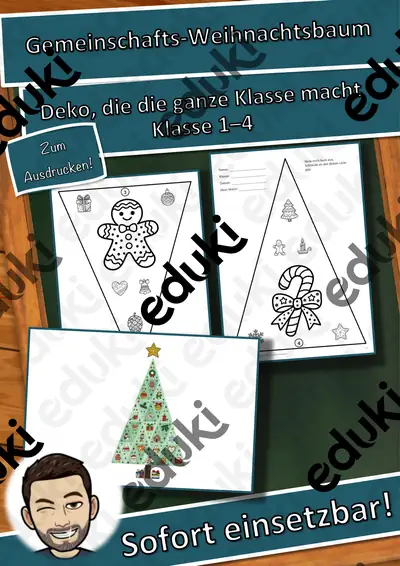
Gemeinschafts-Weihnachtsbaum: Klassen-Tannenbaum zum Ausmalen, 20–40 Teile mit Lageplan, Klasse 1–4
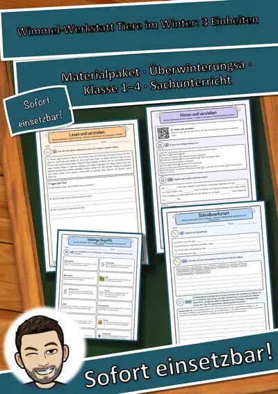
Wimmel-Werkstatt Tiere im Winter Materialpaket: 3 Einheiten – Sprachförderung und Sachwissen mit Wimmelbildern (Grundsch
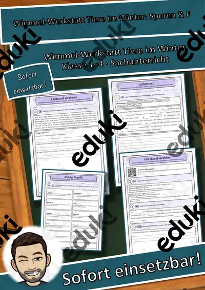
Wimmel-Werkstatt Tiere im Winter Wimmel-Werkstatt Tiere im Winter – Einheit 3: Tierspuren und Winterfell im Schnee – Spr

Wimmel-Werkstatt Tiere im Winter Wimmel-Werkstatt Tiere im Winter – Einheit 1: Winterschlaf, Winterruhe und Winterstarre
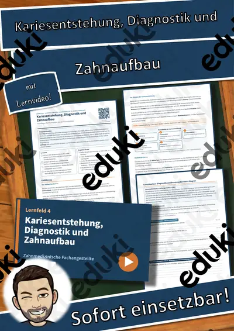
Wimmel-Werkstatt Tiere im Winter Wimmel-Werkstatt Tiere im Winter – Einheit 2: Standvögel und Zugvögel im Winter – Sprac
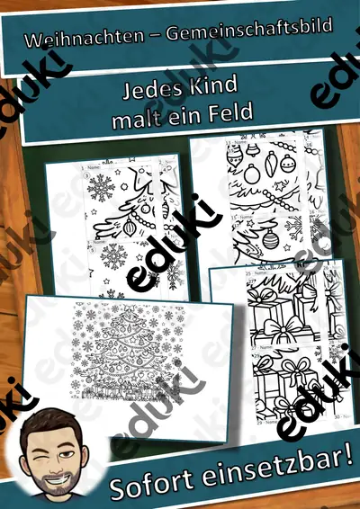
Weihnachten: Das große Gemeinschaftsbild – 30 Felder, ein Kunstwerk für die ganze Klasse
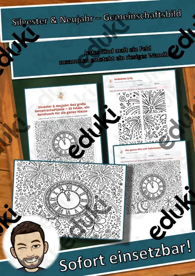
Silvester & Neujahr: Das große Gemeinschaftsbild – 30 Felder, ein Kunstwerk für die ganze Klasse
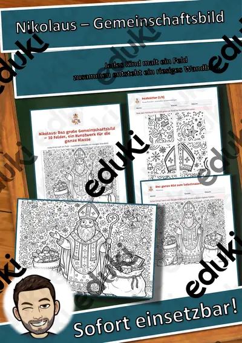
Nikolaus: Das große Gemeinschaftsbild – 30 Felder, ein Kunstwerk für die ganze Klasse
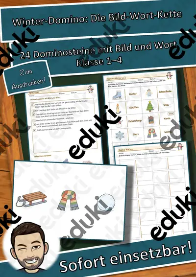
Winterzeit-Spiele: Winter-Domino: Die Bild-Wort-Kette – Klasse 1–4

Winter Escape Room, English Year 6 (KS2): 6 Stations, 2 Locks, 1 Magic Word (FREE)
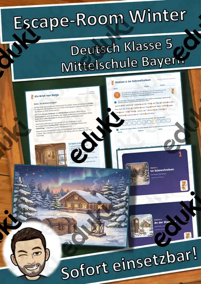
Escape-Room Winter – Deutsch Klasse 5 für die Mittelschule: 6 Stationen, 2 Schlösser, 1 Zauberwort (GRATIS)
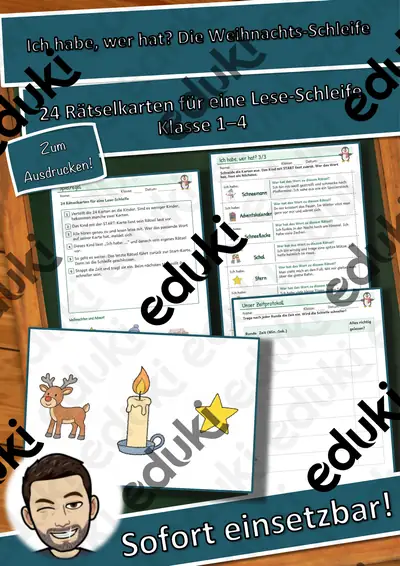
Winterzeit-Spiele: Ich habe, wer hat? Die Weihnachts-Schleife – Klasse 1–4
Naturwerkstatt Grundschule Materialpaket: 3 Einheiten – Differenzierte Winterwerkstatt für Klasse 3 und 4 (Grundschule,
Naturwerkstatt Grundschule Naturwerkstatt Grundschule – Einheit 3: Pflanzen und Bäume in der Winterzeit – Differenzierte
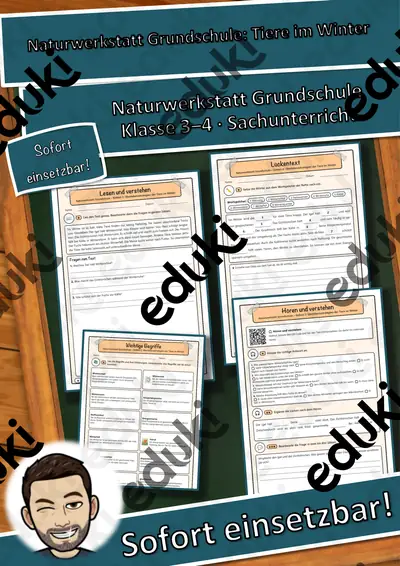
Naturwerkstatt Grundschule Naturwerkstatt Grundschule – Einheit 2: Überlebensstrategien der Tiere im Winter – Differenzi
Naturwerkstatt Grundschule Naturwerkstatt Grundschule – Einheit 1: Winterwetter, Schnee und Eis – Differenzierte Winterw
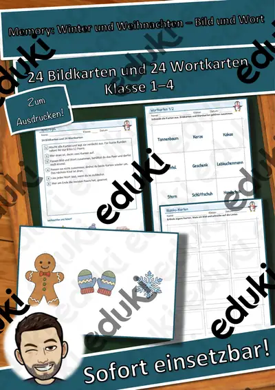
Winterzeit-Spiele: Memory: Winter und Weihnachten – Bild und Wort – Klasse 1–4
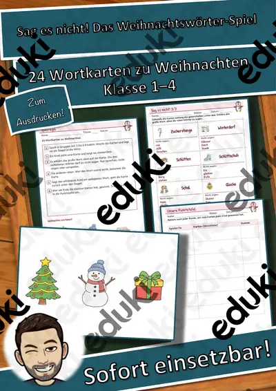
Winterzeit-Spiele: Sag es nicht! Das Weihnachtswörter-Spiel – Klasse 1–4
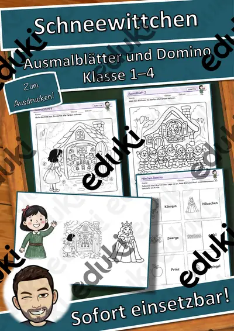
Märchen-Werkstatt: Schneewittchen – Ausmalblätter und Domino, Klasse 1–4 (kostenlos)
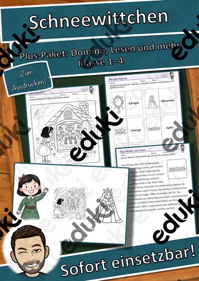
Märchen-Werkstatt: Schneewittchen – Plus-Paket mit Domino, Lesen und Kleben, Lesetext, Klasse 1–4
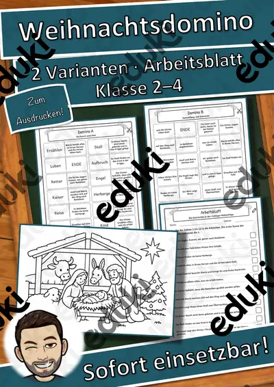
Weihnachtsgeschichte als Domino: Religion in 2 Varianten mit Stichwörtern und Sätzen (Klasse 2–4)
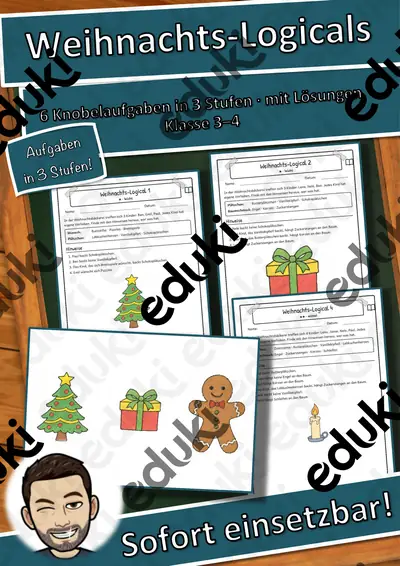
Weihnachts-Logicals: 6 Knobelaufgaben zur Weihnachtsbäckerei in 3 Stufen (Klasse 3–4)
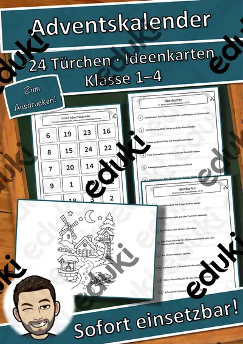
Adventskalender-Vorlage für die Klasse: 24 Türchen, Ideenkarten und Plan (Klasse 1–4)

Satzwerkstatt Winter Materialpaket: Schlangensätze, Purzelsätze, Würfelsätze – 3 Materialien in 3 Stufen (Klasse 1–2, DaZ)
Die Wochen bis zu den Ferien
Im Advent ist der Unterricht anders getaktet: Die Klasse ist unruhig, Feiern stehen an, und trotzdem soll etwas gelernt werden. Das Winterangebot ist dafür gebaut. Es verbindet Stoff mit der Stimmung der Jahreszeit und lässt sich in einzelnen Stunden oder als Wochenprojekt einsetzen.
Pakete für jede Klassenstufe
Zentrale Bausteine sind die Materialpakete, die je Klassenstufe zusammengestellt sind: von „Materialpaket Rechenwelten im Winter für die 1. Klasse“ über „Materialpaket Natur im Winter für die 3. Klasse“ bis zu den Paketen Winter und Advent für Klasse 5 bis 8. Jedes bündelt mehrere Lesespuren oder Aufgaben zu einem Thema, sodass sich ein ganzer Abschnitt planen lässt.
Rechnen, Lesen, Basteln
Für Mathematik stehen die Rechenwelten bereit, dazu „Das Reisebüro: Winterreise in die Berge“ und „Die große Winter-Umfrage“, bei der die Klasse Daten sammelt und auswertet. Lesespurgeschichten verbinden Spannung mit Textarbeit. Die „3D-Anhänger Advent“ liefern Schmuck zum Basteln, bei dem aus einem Blatt ein stehendes Objekt entsteht.
Wie du auswählst
Die Liste ist lang und reicht über alle Fächer. Starte mit dem Klassenfilter und gehe dann nach Fach vor. Zusätzlich helfen Suche und Fach-Klasse-Seiten. Viele Titel enthalten Lösungen und lassen sich ohne Vorbereitung einsetzen, was in der vollen Vorweihnachtszeit viel wert ist.
Ruhige Stunden in der lauten Zeit
Gerade im Dezember helfen Aufgaben, die konzentriert und trotzdem freundlich sind. Rätsel, Lesespuren und Bastelblätter erfüllen beides. Die Kinder arbeiten still, die Lehrkraft gewinnt Zeit für Gespräche, Feste oder Elternpost. Wer einen Tagesplan braucht, kombiniert morgens ein Fach mit einer Lesespur und nachmittags eine Bastelstunde.
Häufige Fragen
Sind Materialien für religiöse und nichtreligiöse Klassen enthalten?
Beides. Neben Advent und Weihnachten gibt es Winterthemen ohne religiösen Bezug, etwa Natur, Schnee und Wintersport.
Gibt es ein Paket für meine Klassenstufe?
Für viele Jahrgänge ja. Der Klassenfilter zeigt dir sofort, was für deine Stufe vorhanden ist.
Wann sollte ich damit beginnen?
Viele Lehrkräfte planen Ende November, damit der Advent gut vorbereitet ist.
Kann ich einzelne Teile eines Pakets einsetzen?
Ja, die Bestandteile lassen sich unabhängig voneinander nutzen.